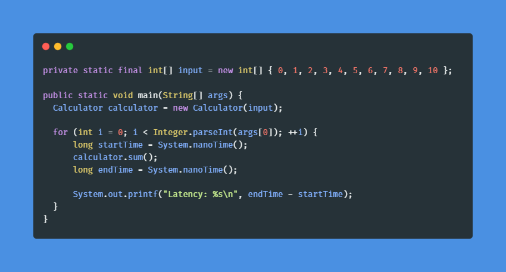
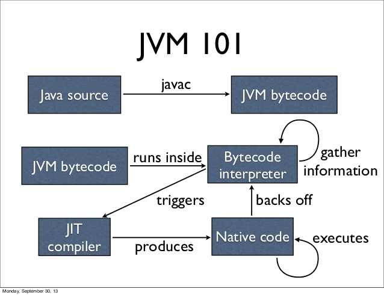
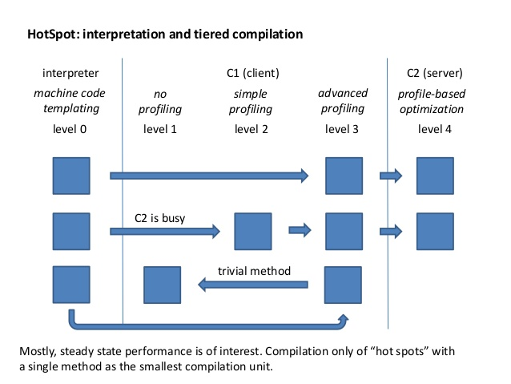
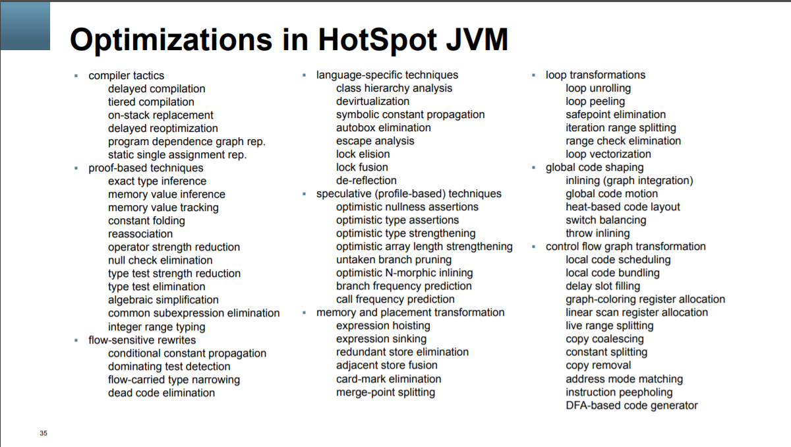
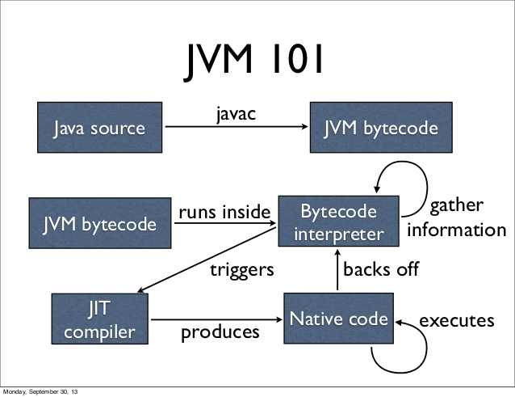
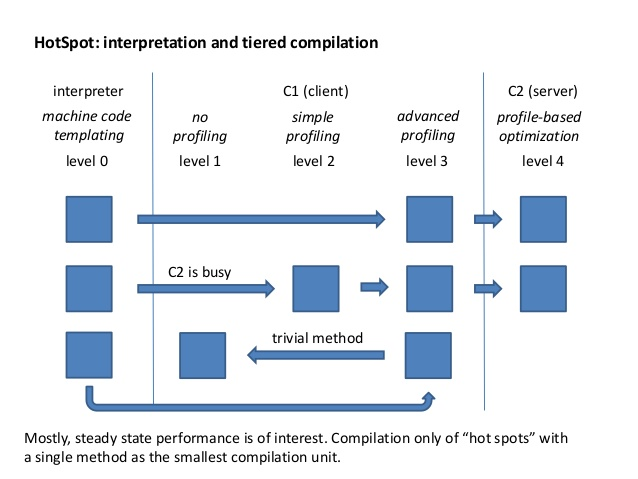
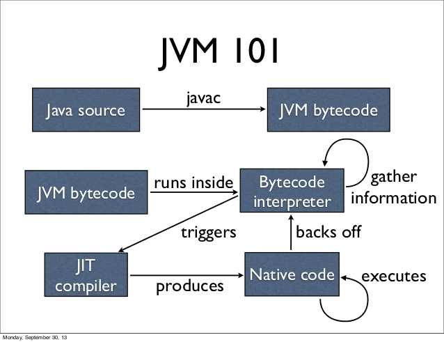
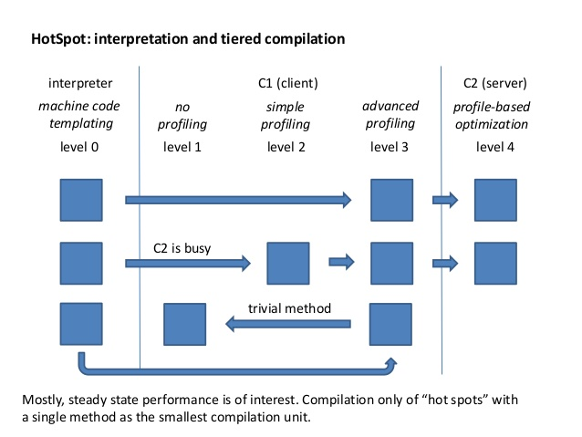

Fun with JIT
What's the fastest way to sum an array?
Let's measure it!

What's going on?
🎉 The JIT compiler 🎉


TBD ... talk about C1 and C2 compilers
Optimizations

Inlining
Example
What's the fastest way to sum an array?
JMH
to the rescue
Results
 

TBD ... talk about C1 and C2 compilers


TBD ... talk about C1 and C2 compilers